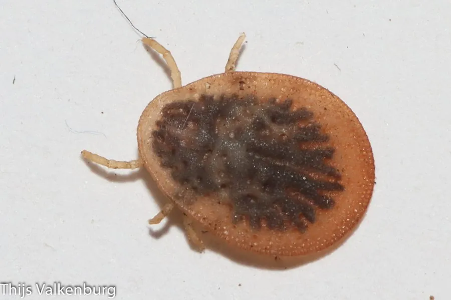

蛛形动物 · 动物界
波斯锐缘蜱 Argas persicus

寄生于家禽的软蜱，体表呈革质，白天藏在鸡舍缝隙，夜间吸血，可传播禽螺旋体病，是养鸡场常见的体外寄生虫。
- 分类
- 门节肢动物门纲蛛形纲目蜱目科软蜱科属锐缘蜱属
- 栖息环境
- 鸡舍、鸽舍、鸟巢的墙缝、栖架和巢材中
- 地理分布
- 全球温暖地区的家禽养殖区和鸟巢
- 保护级别
- IUCN 暂无评估；中国未列入国家重点保护名录
物种志
波斯锐缘蜱未吸血时体长 5–8 mm，身体扁平，呈灰黄或红褐色，体表有细小的皱纹和颗粒，没有硬蜱那样的盾板；口器位于身体腹面，足较短，吸血后身体可膨大至原来的数倍。
它分布于全球温暖地区的鸡舍、鸽舍和鸟巢，主要寄生于鸡、鸭、鸽等家禽，白天藏在墙缝、栖架和巢材中，夜间出来吸血，每次吸血时间较短但可多次吸血。波斯锐缘蜱可传播禽螺旋体病和禽痘等疾病，严重感染会导致家禽贫血、消瘦和产蛋下降。它的幼虫也会叮咬人，雌蜱可产卵数十至上百粒。防治以清理禽舍、封堵缝隙和定期检查为主。目前 IUCN 暂无评估；中国未列入国家重点保护名录，是重要的禽类体外寄生虫。
形态与习性
- 食性吸食鸡、鸭、鸽等家禽的血液
- 体长未吸血 5–8 mm，吸血后膨大数倍
- 识别体表革质有皱纹，无硬蜱盾板
- 习性白天藏在缝隙，夜间出来吸血
- 危害传播禽螺旋体病和禽痘，致家禽贫血
- 防治清理禽舍、封堵缝隙、定期检查
趣味知识
- 波斯锐缘蜱属于软蜱，体表像皮革一样有皱纹，没有硬盾板。
- 它白天躲在鸡舍墙缝里，晚上才爬出来吸血。
- 严重感染时鸡会贫血、消瘦，产蛋量也会下降。